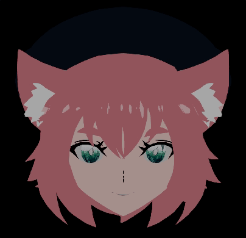
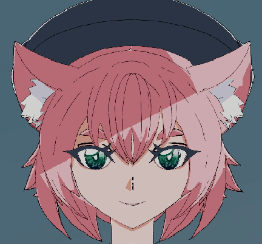
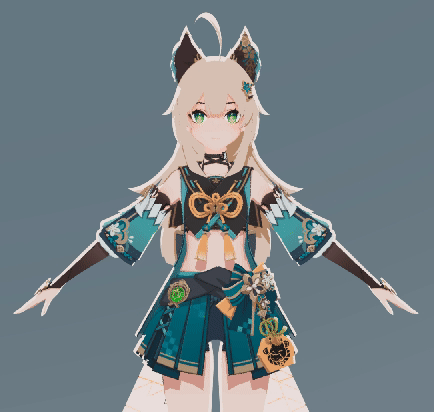
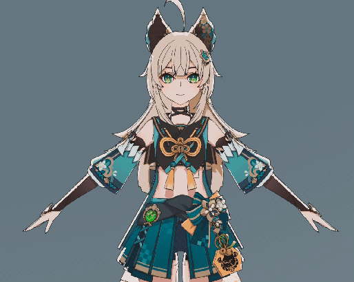

Nowadays, it's quite common for independent artists who are growing to animate or make fanart of things that they like! partially because of how easy it is to rip things such as video game models, you’ll have entire websites and forums dedicated to posting these models online available for everyone... something about 'ease of use', and a discussion about legality is probably to be had here as well... which is why we create our own models and rigs for this kind of stuff.


In the case of Genshin, they are quite lenient and the models are distributed freely, usually as an .fbx, the universal format that most 3d software and game engines can import and read. they can contain information like the base model, skeletal animation, and rigs. Rigs for animation are usually much less granular than this, and unfortunately, are not as easy to contain in a universal format. Goals aren't constrained to the skeletons in a way that’s universal, they’re specific to the program. Program A would have no idea how Program B or Program C constrain objects natively. They also upload some of them online through various chinese forums for fan creators (not just limited to China).
Now, I mentioned all of this just to say: I *still* choose to make my own models and rigs— Why? because game models are usually much lower in polygon counts and don’t contain program level rigging— they just don’t really have the fidelity i’m looking for.


The above demo showcases the native model of the character Kirara from Genshin. In the context of the game its fine of course, and i doctored it up with my own shaders and lineart, but the 3D Model syndrome is still prevalent as is. We need to capture as much of the imperfections and dynamism of 2D illustrative anime as possible in the style of our 3D.